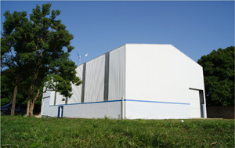
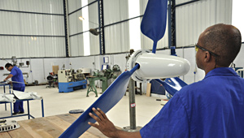
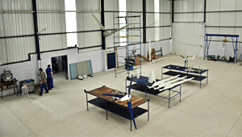

A Empresa
A BRTurbinas foi constituída em 2014 para pesquisar, desenvolver e distribuir informações sobre soluções energéticas. A BRTurbinas fabrica e comercializa equipamentos voltados para a geração de energia a partir de fontes renováveis. É um fabricante novo no mercado, de pequeno porte instalado no país recentemente. A planta fabril da BRTurbinas foi construída e está totalmente equipada para atendender ao crescimento previsto para o mercado de fontes alternativas de energia de pequeno porte no Brasil. A BRTurbinas é detendora de todo o conhecimento tecnológico necessário à produção e aprimoramento de seus equipamentos, contando ainda com laboratórios de máquinas elétricas, processos térmicos e túnel de vento. Os equipamentos desenvolvidos e fabricados pela BRTurbinas utilizam tecnologia de ponta com alto índice de inovação para atender às necessidades de nossos clientes. Para isso conta com parcerias com Universidades e Centros de pesquisas distribuídos por todo o Brasil. Além de vender e distribuir produtos, nosso foco é passar informação e noticias sobre essa energia que promete tanto.
 
Definição da Empresa:
“Soluções tecnológicas para geração de energia a partir de fontes renováveis e divulgação dessa energia”.
Declaração de Visão:
“Ser a maior empresa Brasileira com reconhecimento Global em Soluções
tecnológicas para geração de energia a partir de fontes renováveis”.
Declaração de Missão:
“Integrar conhecimentos para desenvolver produtos para geração de energia
a partir de fontes renováveis atuando de forma criativa segura e rentável com
responsabilidade social e ambiental”.
 Diferenciais da BrTurbinas e seus produtos
- Produtos fabricados com tecnologia 100% nacional.
- Tecnologia de ponta
- Patentes deferidas e outras submetidas
- Assistência técnica direto da fábrica
- Garantia de 2 anos
- Turbinas com melhor relação peso/potência do mercado
- Produtos simples e robustos de fácil instalação.